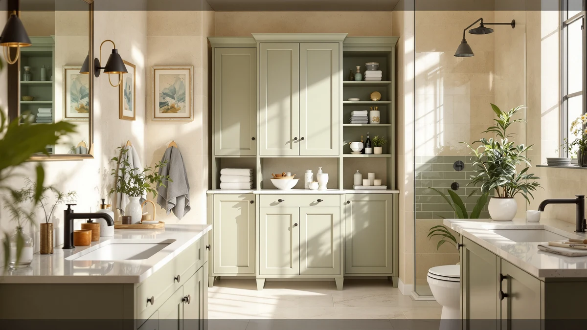

The Best Bathroom Storages Under $50 (2026)
Prices and picks verified as of September 2026. Independent, reader-supported reviews.


Quick Answer
If you want the best bathroom storages under $50 without guessing on sizing, the GeeBom Under Sink Organizer Pull is the safest buy at $35.99, because its frame adjusts from 13.8 to 16.9 inches tall to match most cabinets. We compared seven organizers on price, material, and how well each one handles the dead space around a drain pipe, and the GeeBom balanced a sturdy metal-and-wood build with the widest size range of the group.
Our pick: GeeBom Under Sink Organizer Pull, $35.99 Check Price on Amazon
Bottom line: our top pick is the GeeBom Under Sink Organizer at $35.99. The best budget option is the Simple Trending Under Sink Organizer 2 Pack at $19.99.
Things to Know Before You Buy
- Prices in this roundup range from $15.99 to $35.99. All seven picks land under the $50 cutoff, so you're choosing based on fit and pack count, not stretching your budget.
- Pull-out and L-shaped are the two main designs. A pull-out frame like the GeeBom or REALINN Pull slides forward for easy access. An L-shaped pair like the REALINN L-Shaped wraps around a center drain pipe instead.
- Multi-packs solve the pipe problem cheaply. The Simple Trending 2-pack, the Delamu 2 Sets of 3-Tier, and the Zero Zoo 4-pack all split into separate pieces you can arrange around plumbing.
- Every pick shares the same metal-and-wood build. That combination resists the humidity under a bathroom sink better than bare cardboard or particleboard.
- Measure before you order. A couple of listings, including the Fabspace, don't publish exact dimensions, so check your cabinet's width and height against the seller's photos first.
The best bathroom storages under $50 solve a problem that has little to do with price: most vanity cabinets are built around a drain pipe or a cramped P-trap that swallows loose bottles and never gives them back. We compared seven organizers priced between $15.99 and $35.99, weighing material, footprint, and how each one handles that awkward space around the plumbing, before settling on a top pick that most readers should buy.
The GeeBom Under Sink Organizer Pull takes the top spot. Its frame extends from 13.8 to 16.9 inches tall, so it adapts to more cabinets than a fixed-size unit, and the metal-and-wood construction holds up to daily splashes better than bare wood or cardboard. If you want to spend less, the Simple Trending Under Sink Organizer ships as a two-piece set for $15.99, the cheapest way onto this list, and it still gives you two separate pieces to flank a center pipe.
The rest of the field covers specific situations: the Delamu 2 Sets of 3-Tier stacks supplies vertically when your cabinet has height to spare, the Fabspace is our budget pick for shoppers who want a no-frills option under $25, and the two REALINN organizers give you a choice between a pull-out drawer and an L-shaped pair built for a center drain. Whichever design fits your cabinet, every option here keeps you well under the $50 mark.
Why You Should Trust Us
Ilane Tall covers home and bath products for Best Bathroom Storage, focusing on the products readers actually put under a sink or squeeze into a cramped vanity, not the ones with the flashiest listing photos. This guide to the best bathroom storages under $50 draws on the pricing, materials, and dimensions each seller publishes on Amazon, cross-checked against customer ratings, so every claim you read here traces back to a fact on the product page rather than a guess.
How We Picked
We started with a hard cutoff: every candidate had to sell for $50 or less, since that's the budget most readers searching for bathroom storage under $50 are working with. From there we narrowed the field on three criteria. First, construction: we kept metal-and-wood builds, which resist bathroom humidity better than cardboard or particleboard, and dropped anything that relied on flimsier materials. Second, fit: we favored organizers that either adjust to different cabinet sizes, like the GeeBom, or ship as multiple pieces you can rearrange around a drain pipe, like the Delamu and the Simple Trending. Third, customer ratings: every product that made the final seven carries a four-star average on Amazon, so we weren't recommending anything with a track record of buyer complaints.
How We Compared
We built a comparison table for every candidate in this bathroom storage under $50 field, logging price, listed dimensions, pack count, and material for each one, then checked those numbers against a typical vanity cabinet footprint of roughly 20 to 24 inches wide. Organizers with an adjustable height range, like the GeeBom's 13.8-to-16.9-inch frame, scored better than fixed-size units because they fit a wider range of cabinets without a return. We also weighed price per unit rather than sticker price alone, since a $29.99 two-pack and a $35.99 single unit solve different problems depending on whether your cabinet needs one piece or two arranged around a pipe.
Our Picks

GeeBom Under Sink Organizer Pull
What we like
- Height adjusts from 13.8 to 16.9 inches to match your cabinet
- Metal-and-wood build handles daily under-sink humidity
- 11.8-inch width leaves room to work around a center drain
Flaws but not dealbreakers
- At $35.99, it's tied for the priciest single unit on this list
- One-piece frame, so it won't split across a center pipe the way a two-piece set can
| Material | Metal / wood |
| Size | 11.8"W x 15.9"D x 13.8-16.9"H |
The GeeBom Under Sink Organizer Pull is the top pick in this roundup of the best bathroom storages under $50 because it solves the sizing guesswork that trips up fixed organizers. Instead of locking you into one height, the frame extends from 13.8 to 16.9 inches, so it settles into shallow cabinets and taller ones without leaving a gap at the top or forcing the shelf to sit crooked. At 11.8 inches wide and 15.9 inches deep, it's compact enough to slide into a standard vanity while still holding a real amount of gear.
Build quality is where the $35.99 price earns its keep. The metal-and-wood construction stands up to the splashes and humidity that live under a bathroom sink far better than the cardboard organizers you'll find at the bottom of Amazon's search results. The one honest tradeoff is that it comes as a single frame, so if your drain pipe runs down the center of the cabinet, you're better off with a two-piece set like the REALINN L-Shaped. For most cabinets, though, the adjustable height and solid build make the GeeBom the pick to buy first.

Simple Trending Under Sink Organizer
What we like
- $15.99 for two units is the lowest price-per-unit on this list
- Two matching pieces let you flank a center drain instead of squeezing in one wide organizer
Flaws but not dealbreakers
- Individual pieces run smaller than the single-unit GeeBom
- No adjustable height listed, so measure your cabinet clearance before you order
| Material | Metal / wood |
| Size | 2 pack |
The Simple Trending Under Sink Organizer is our runner-up because it gets you into this category for less money than anything else we compared. At $15.99 for two matching units, you're paying roughly $8 per piece, which undercuts every single-unit organizer on this list. The two-piece format also does the job that a wide, one-piece organizer can't: you set one unit on each side of a center drain pipe and use both sides of the cabinet instead of leaving one half empty.
You give up some of the GeeBom's flexibility to get that price. Simple Trending doesn't publish an adjustable height range, so each piece is a fixed size, and if your cabinet is unusually tall or shallow, you'll want to check the listing photos against your own measurements first. The metal-and-wood build matches the rest of the field for humidity resistance, so durability isn't the tradeoff here, price and adjustability are. For anyone stocking a bathroom on a tight budget, it's still the best bathroom storages under $50 can offer at this price point.

Delamu 2 Sets of 3-Tier
What we like
- 3-tier design on each of the two racks stacks bottles vertically
- Two separate racks let you flank a center pipe or split one to each cabinet
Flaws but not dealbreakers
- At $29.99, it costs nearly twice the Simple Trending 2-pack
- Three shelves need more headroom than a single flat organizer
| Material | Metal / wood |
| Size | 2 Pack 3-Tier |
The Delamu 2 Sets of 3-Tier takes a different approach to the same problem: instead of spreading supplies across the cabinet floor, it stacks them. Each of the two racks holds three tiers, so bottles that would otherwise tip over on a flat shelf stand upright and stay visible. That layout makes it one of the better bathroom storages under $50 for anyone whose collection of cleaning sprays and backup toiletries has outgrown a single shelf.
The tradeoff is height. Three tiers stacked on top of each other need more vertical clearance than a flat organizer, so it fits best in cabinets where the drain pipe sits low and leaves headroom above it. At $29.99, it also costs close to double what the Simple Trending 2-pack asks, though you're getting six total shelves across the two racks in exchange. If your cabinet has the height and you'd rather stack than spread out, the Delamu is a strong also-great pick.

Fabspace Bathroom Under Sink Organizers
What we like
- $23.99 undercuts both REALINN options and the Delamu
- Same metal-and-wood build as every other pick on this list
Flaws but not dealbreakers
- Amazon's listing doesn't specify exact dimensions, so measure your cabinet before ordering
- No adjustable height range like the GeeBom offers
| Material | Metal / wood |
| Size | — |
The Fabspace Bathroom Under Sink Organizers is our budget pick for a simple reason: it costs less than the mid-tier options here while using the same metal-and-wood construction as the pricier picks. At $23.99, it undercuts both REALINN organizers and the Delamu 2 Sets of 3-Tier, so if you need a solid organizer without a two-piece kit or an adjustable frame, this is the straightforward choice among the best bathroom storages under $50.
The honest catch is that Amazon's listing doesn't spell out exact dimensions the way the GeeBom's does. That's not a dealbreaker, but it means you should lean on the seller's photos and reviews to judge whether it will clear your P-trap before you buy, rather than assuming it will fit sight unseen. Once it's in place, you're getting the same humidity-resistant build as every other pick here for a price that lands closer to the bottom of the range.

4Pack 2-Tier Bathroom Storage Organizer
What we like
- Four separate 2-tier units cover multiple cabinets from a single purchase
- The 2-tier layout on each piece adds a shelf without a tall footprint
Flaws but not dealbreakers
- Amazon's price wasn't locked in when we checked, so confirm the total cost before you order
- Four separate pieces to unpack and place instead of one
| Material | Metal / wood |
| Size | 4Pack |
The 4Pack 2-Tier Bathroom Storage Organizer from Zero Zoo covers a different need than the rest of this list: volume. Instead of one or two pieces, you get four 2-tier organizers in a single order, which is enough to outfit a bathroom cabinet, a kitchen sink, and a couple of other spots without buying multiple listings separately. Each piece adds a second tier over a flat shelf, so you get more usable space without stacking bottles as high as the Delamu's 3-tier design does.
Because the price on this listing wasn't set at the time we checked, treat the dollar figure on the page as something to confirm before you check out rather than a fixed number. That's a real caveat, not a formality, since the whole appeal of a 4-pack is getting a good price per unit. The tradeoff for buying four separate pieces is more unboxing and placement than a single-unit organizer requires, but for anyone furnishing multiple cabinets at once, the coverage is hard to match elsewhere on this list.

REALINN Under Sink Organizer L-Shaped
What we like
- The L-shaped profile on each of the two pieces hugs a center pipe instead of leaving dead space
- Two matched pieces give you symmetrical storage on both sides of the cabinet
Flaws but not dealbreakers
- At $35.99, it ties the GeeBom as the most expensive pick here
- The L-shape only pays off if your plumbing actually runs down the center
| Material | Metal / wood |
| Size | 2 Pack |
The REALINN Under Sink Organizer L-Shaped tackles the center-pipe problem head-on. Rather than asking you to work around the plumbing with a rectangular shelf, each of the two pieces is cut into an L shape that fits flush against a drain running down the middle of the cabinet. That design turns the awkward space on either side of the pipe into two usable storage zones instead of one narrow strip on either edge.
You pay for that fit: at $35.99, it matches the GeeBom as the priciest pick in this roundup of the best bathroom storages under $50. It's also a specialized shape, so if your cabinet's plumbing runs along the back wall instead of down the center, a straightforward pull-out organizer will serve you better and cost less. For the specific case it's built for, though, the L-shaped pair uses cabinet space that most organizers simply leave empty.

REALINN Under Sink Organizer Pull
What we like
- $23.10 for a single unit undercuts the GeeBom by nearly $13
- Pull-out design matches the GeeBom's without the adjustable-height premium
Flaws but not dealbreakers
- Sold as a single piece, so it won't split around a center pipe like the L-Shaped REALINN
- No adjustable height range listed, unlike the GeeBom
| Material | Metal / wood |
| Size | 1 Pack |
REALINN makes two of our seven picks, and the Under Sink Organizer Pull is the more affordable of the pair. It's a single pull-out frame, the same basic idea as the GeeBom, but without the adjustable height range, which is how it lands at $23.10 instead of $35.99. If your cabinet doesn't need an adjustable fit and you want a sliding drawer that reaches the back of the space, this is the cheaper way to get there.
The compromise is flexibility. Because it's a fixed-size, single-piece unit, it won't split around a center drain pipe the way its L-shaped sibling does, and you can't stretch it to fit an unusually tall cabinet the way you can with the GeeBom. For a standard cabinet without a center pipe, though, it delivers the same pull-out convenience as our top pick for close to $13 less, which makes it one of the better value plays among the best bathroom storages under $50.
Quick Comparison
| Product | Material | Price | Rating | Best for | Get it |
|---|---|---|---|---|---|
| GeeBom Under Sink Organizer Pull | Metal / wood | $35.99 | 4 | Adjustable-height cabinets | View on Amazon → |
| Simple Trending Under Sink Organizer | Metal / wood | $15.99 | 4 | Tightest budgets | View on Amazon → |
| Delamu 2 Sets of 3-Tier | Metal / wood | $29.99 | 4 | Vertical stacking | View on Amazon → |
| Fabspace Bathroom Under Sink Organizers | Metal / wood | $23.99 | 4 | No-frills budget buy | View on Amazon → |
| 4Pack 2-Tier Bathroom Storage Organizer | Metal / wood | 4 | Multiple cabinets at once | View on Amazon → | |
| REALINN Under Sink Organizer L-Shaped | Metal / wood | $35.99 | 4 | Center drain pipes | View on Amazon → |
| REALINN Under Sink Organizer Pull | Metal / wood | $23.10 | 4 | Single pull-out drawer | View on Amazon → |
What's the difference between the pull-out and L-shaped organizers on this list?
A pull-out organizer, like the GeeBom or the REALINN Pull, is a single frame that slides forward so you can reach items at the back of the cabinet without kneeling down.
Do I need a multi-pack, or is one organizer enough?
One unit covers a single cabinet if it isn't split by a center pipe, which is why the single-piece GeeBom and REALINN Pull work well on their own.
The Competition
We looked at more organizers than the seven that made this list of the best bathroom storages under $50, and a few common types didn't earn a spot. Single flat shelves without any tier or L-shaped cutout came up constantly, but they leave the space around a center pipe unused, which is exactly the problem our multi-piece picks like the Delamu and the REALINN L-Shaped were chosen to solve. We passed on those flat, one-piece designs whenever a better-fitting alternative existed at a similar price.
We also skipped listings built from bare wood or plastic-only construction instead of the metal-and-wood combination every pick here uses, since that pairing holds up better against the humidity that collects under a bathroom sink. A handful of ultra-cheap single bins under $10 came close to making the cut, but you typically need three or four of them to match the capacity of a single pick like the Fabspace, which erases the savings once you add them up. After weighing all of it, the GeeBom Under Sink Organizer Pull remains our top choice among the best bathroom storages under $50, because its adjustable frame fits more cabinets than any fixed-size competitor we compared.